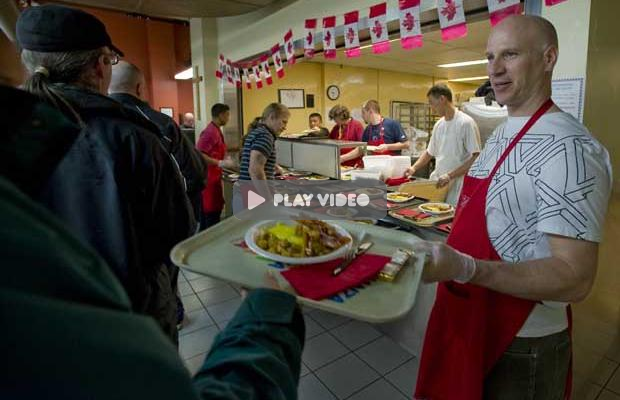

About
High levels of violence, homelessness, addictions and poverty characterize the Downtown Eastside community, and women and children are particularly vulnerable to exploitation, injustice and injury. Founded in 1978, DEWC is one of the few safe spaces within the Downtown Eastside exclusively for women and their children.
The Downtown Eastside Women's Centre is building a new shelter that aims to provide women and their children hot meals, free clothing, secure mailing address, phone and computer access, functioning and secure toilets and shower.
Our new shelter project requires $6000 to cover the following costs:
- Equipments
- Tables and Chairs
- Building functional showers and toilets
- Staffing
- Food
- Utility
- Toiletries
- Haircuts
- Sewing machines
- Feminine hygiene products
- Computer access
- Harm reduction supplies
- First aid